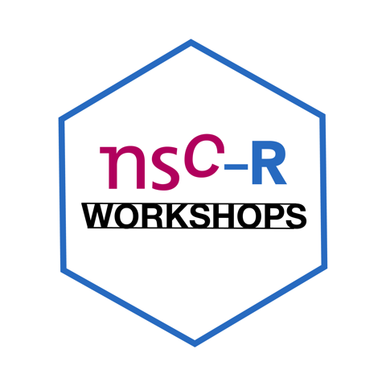

About this blog
The NSC-R Tidy Tuesday workshop sessions are inspired by the Tidy Tuesday initiative, which was aimed at providing a safe and supportive forum for individuals to practice their data processing and visualization skills in R while working with real-world data.Here ten workshops are presented in ten posts
In the first post Sam Langton presents the exploration and visualization of Starbuck coffee-use data.
The second post is about board games and here Asier Moneva explores research questions like ‘What are the top 3 best-selling board games by game type?’ and ‘How do board game sales relate to online user ratings’. He shows how this can be explored and visualized.
Alex Trinidad shows us in post nr. 3 how R and RStudio can be used to wrangle dates-time data.
Post nr. 4 introduces us to Sankey diagrams, and how they can be created in R. Tim Verlaan is our mentor in this workshop.
Wim Bernaso introduces us in Post 5 to open footbal data which can be explored at various levels (player, team, match, competition) and from various perspectives.
Post 6 (Sam Langton) demonstrates long to wide (and wide to long) transformations using functions available in the tidyrpackage. In this chapter data from the London Fire Brigade are used.
Post 7 explores how revenue and expenditure are distributed in sports. In this chapter Alex Trinidad let us look at the differences in sport revenues and expenditures between men and women.
In post nr. 8 Wim Bernasco tries to make sense of long-term temporal trends in crimes, and to make useful statements about how things changed when the COVID pandemic arrived around February 2020. In this chapter eight steps in the analysis are worked out.
Also in post nr. 9 Wim Bernasco is the workshopleader. In this workshop, the focus is on exploring, analyzing, and visualizing student mobilisation streams between countries.
Post nr. 10 is the last workshop presented here and this one is given by Franziska Yasrebi-de Kom, and is a descriptive analysis on a salary survey in different countries and some background variables of the participants.
